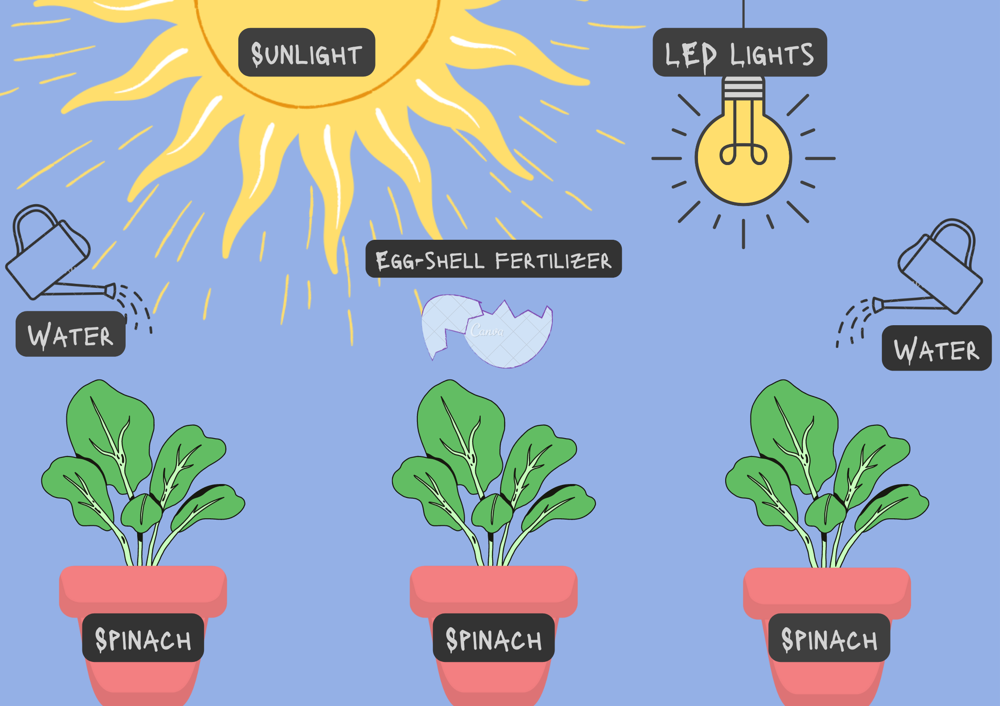

The BCAMA Perspective

As for our choice of fertilizer to experiment with, we chose to experiment with eggshell fertilizer,
which can be simply made by crushing the shells and then boiling them, after which we cover it for a week, opening it once
a day to stir it. Then we pour the mixture onto the soil. Eggshells contain lots of calcium which helps plants in absorbing
nutrients which is vital to plant growth. As a fertilizer, it can lower acidity in soil as many plants grow better in less acidic
soils. It also encourages root growth and wards off pests. Another reason why we chose eggshells is that they are cost-efficient with
the average price of 1 egg being Php 3-6.
Considering that we also wish to keep things space efficient too, we are testing this with another set-up wherein the growing spinach
will be grown mainly under the presence of an LED in order to see which method would be more beneficial in growing the spinach. We try
to keep the experiment as cost-effective and beneficial for the health of the community as much as possible.
The Experiment
A deeper dive into the project

Let us take a look at our setups for the experiment. As we have established, we will be experimenting with the effects of eggshell
fertilizer, mainly between natural light (sunlight) and LED lights. To make sure the experiment succeeds, we will keep things as controlled as
possible. Examples of such include the amount and type of soil used to plant the spinach in, the size of the container they will be grown in,
the amount and type of water they will receive, the amount and type of spinach we will use, and the time allotted for it to grow in each set-up.
At the end of the experiment, we will measure the size of the spinach leaves as well as the vegetables' height. Therefore we have hypothesized
that if spinach is grown in sunlight with eggshell fertilizer, then it will grow better.